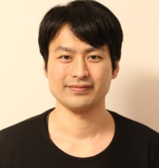

From one broadcast camera to the full game state. A 3D fly-in lands on the real broadcast camera pose, then the footage is overlaid with player tracking, 3D pose, pitch calibration, a top-down minimap and team shape, the stages this tutorial walks through. Player poses and camera parameters are ground truth from the WorldPose dataset (Jiang et al., ECCV 2024, ETH Zürich; FIFA World Cup 2022, Argentina vs Croatia); rendering and overlays by the tutorial organizers.
Sports videos are rich in visual and temporal information: player motion, object trajectories, spatial formations, interactions, tactics, and long-range event dependencies. Unlike many generic video understanding settings, sports videos are highly structured: the court or field geometry is known, the number of agents is limited, and the rules define meaningful events and state transitions. At the same time they remain hard because of fast motion, occlusion, camera movement, tiny objects such as balls and shuttlecocks, and the need to reason over long temporal contexts.
This tutorial presents sports video as a structured benchmark for video understanding. It walks through the full pipeline, from perception to language-based reasoning, and shows how each stage connects to the next. Beyond the application itself, we frame sports as a stress-test for general video understanding whose structured, multi-agent, long-context nature surfaces problems and solutions that transfer back to broader video-language reasoning.
Player and ball detection and tracking, identification and re-ID, pose estimation, court and field calibration, top-down minimap mapping.
Temporal action spotting, fine-grained actions and player interactions, and game state reconstruction from low-level signals.
Dense captioning and commentary generation, grounding of players and events, sports video question answering, highlight and report generation.
Tactical pattern discovery, multi-agent trajectory and outcome forecasting, and long-context reasoning over full matches.
Keywords: sports video understanding · structured video understanding · multimodal learning · vision-language models · video captioning · video question answering · tactical reasoning · long-context video understanding.
The tutorial is designed to be accessible: it starts from foundational concepts and moves toward advanced topics. A basic background in computer vision and machine learning is helpful. Familiarity with video understanding, deep learning, or vision-language models is useful but not required.
Registration follows the ACCV passport system: conference attendees register for tutorials through the ACCV registration form. No separate registration is required.
Half-day program (about 3.5 hours) in seven parts with one break. Exact clock times will be posted once the ACCV program is finalized.
| Duration | Topic | Presenter |
|---|---|---|
| 25 min |
Introduction: Why Sports Video?
|
Keisuke Fujii |
| 25 min |
Perception: Turning Pixels into Who-Is-Where
|
Ning Ding |
| 25 min |
Event Understanding: From Motion to Meaning
|
Ning Ding |
| 25 min |
Vision-Language Modeling: Teaching Models to Commentate
|
Ning Ding |
| 30 min | Break — attendees interact and discuss | — |
| 25 min |
Tactical Reasoning: Reading the Game, Calling the Next Play
|
Ning Ding |
| 25 min |
Sports: The Stress-Test for General Video Understanding
|
Toru Tamaki |
| 30 min |
Open Challenges: What Is Still Unsolved
|
Keisuke Fujii |
Presenter assignment is tentative and may be adjusted before the tutorial.
Ning Ding received her Ph.D. in intelligent systems from Nagoya University in 2024 and is an Assistant Professor at the Graduate School of Engineering, Nagoya Institute of Technology. Her research covers interpretable sports action evaluation and sports video understanding, including BFMD, a full-match badminton dataset for dense shot captioning (CVPR 2026 Workshops), and Shot2Tactic-Caption for multi-scale tactical captioning (ACM MMSports 2025). She co-organizes the Nagoya University Sports Machine Learning Workshop (2025, 2026). Primary contact.

Keisuke Fujii received his Ph.D. from Kyoto University in 2014. After postdoctoral and research scientist positions at Nagoya University and the RIKEN Center for Advanced Intelligence Project, he joined Nagoya University, where he is an Associate Professor at the Graduate School of Informatics. His research is interdisciplinary across machine learning, behavioral sciences, and sports sciences. He is the author of Machine Learning in Sports: Open Approach for Next Play Analytics (Springer, 2025) and the lead organizer of the Nagoya University Sports Machine Learning Workshop (2025, 2026).
Toru Tamaki received his Ph.D. in information engineering from Nagoya University in 2001. After positions at Niigata University and Hiroshima University, he is a Professor at the Department of Computer Science, Nagoya Institute of Technology, and was an associate researcher at ESIEE Paris in 2015. His research interests include computer vision, image recognition, deep learning, and video understanding. He has organized international workshops in conjunction with ACML 2019, PerCom 2019, ACCV 2010, and ICCV 2009.
All materials will be released on this page so that attendees can continue exploring the topic after the conference.
Questions about the tutorial: ding.ning@nitech.ac.jp